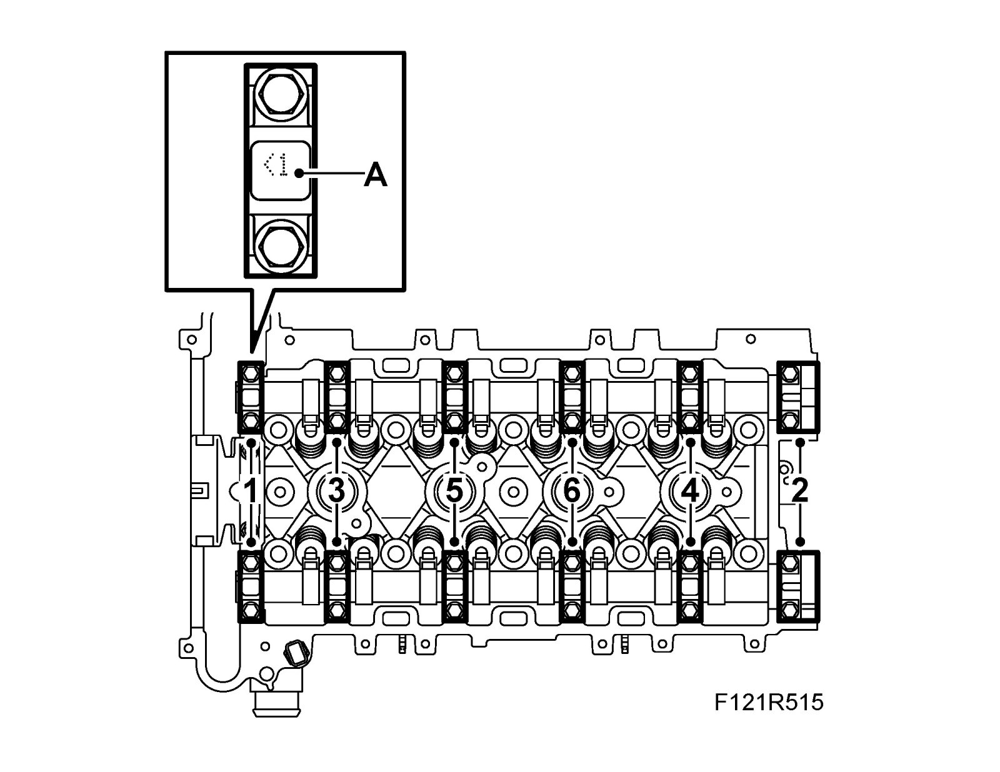
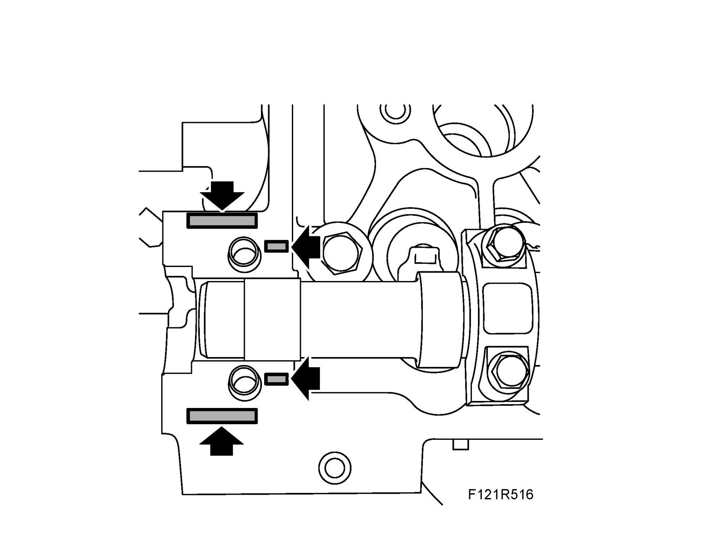
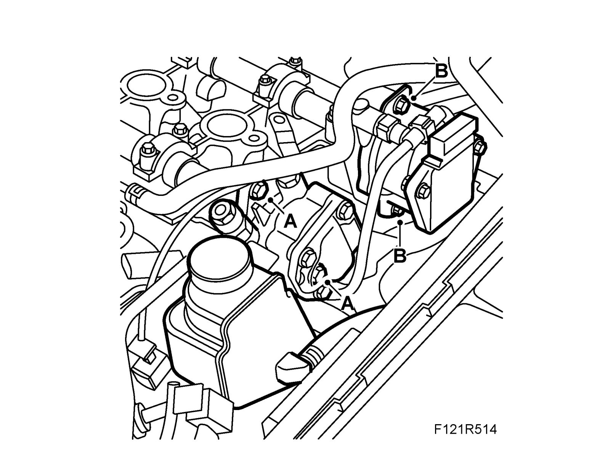

Removal and Replacement
CamshaftsTo remove
1. Remove Camshaft sprocket
2. Remove the power steering pump bolts (A) and shift the pump outward.

3. Remove the vacuum pump bolts (B) and shift the pump outward.
4. Slacken the camshaft bearing caps evenly in the indicated order. Carefully detach the camshaft guide bearings with a rubber mallet.
Important
The cylinder head must be replaced in the event of a defective camshaft bearing. The rocker arms must be replaced when replacing the camshafts.

5. Note the bearing cap designations (A)
To fit
1. Lubricate the contact surfaces with engine oil.
2. Apply a thin film of sealant on the sealing surfaces of the guide bearing.

3. Note the bearing cap designations (A).

4. Fit the camshaft bearing caps in the specified order.
Tightening torque 9 Nm (7 lbf ft).
5. Fit the guide bearings.
Tightening torque 22 Nm (16 lbf ft)
6. Fit the vacuum pump bolts (B).
Tightening torque 22 Nm (16 lbf ft)

7. Fit the power steering pump bolts (A).
Tightening torque 22 Nm (16 lbf ft)
8. Fit Camshaft sprocket.